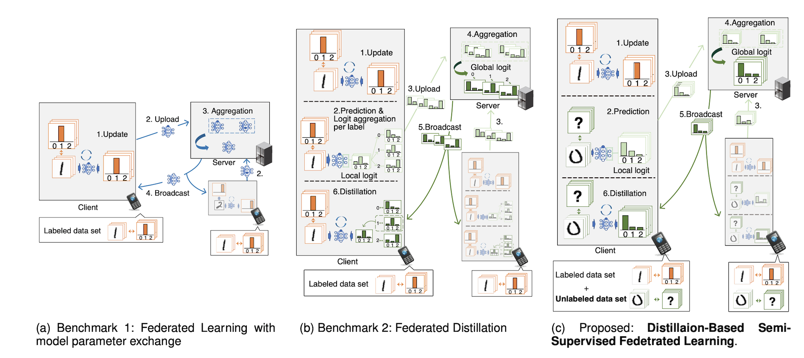
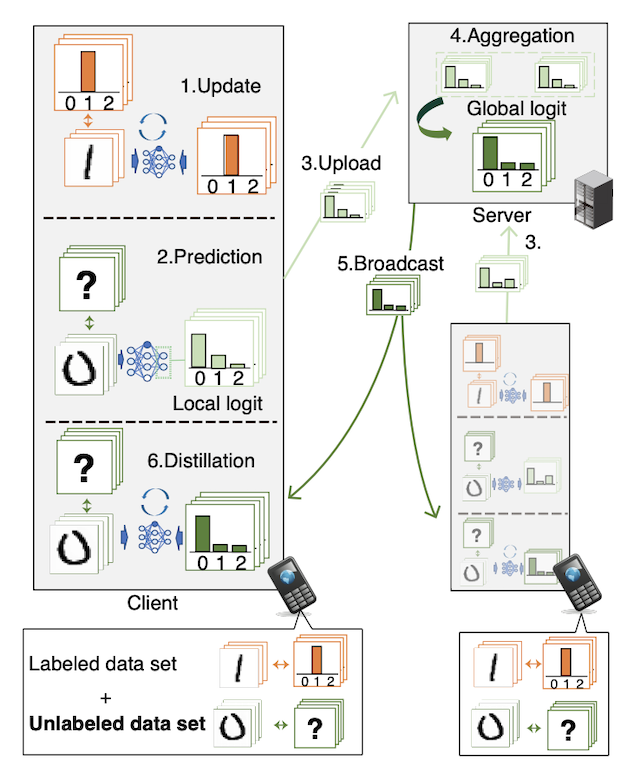

Scalable Distributed Machine Learning over Wireless
Scale for Number Clients: Differentially Private Over-the-Air Computation Federated Learning (DP-AirComp FL)

Over-the-air computation (AirComp)-based federated learning (FL) enables low-latency uploads and the aggregation of machine learning models by exploiting simultaneous co-channel transmission and the resultant waveform superposition.
We aimed at realizing secure AirComp-based FL against various privacy attacks where malicious central servers infer clients' private data from aggregated global models. To this end, a differentially private AirComp-based FL is designed in this study, where the key idea is to harness receiver noise perturbation injected to aggregated global models inherently, thereby preventing the inference of clients' private data.
However, the variance of the inherent receiver noise is often uncontrollable, which renders the process of injecting an appropriate noise perturbation to achieve a desired privacy level quite challenging. Hence, we designed transmit power control across clients, wherein the received signal level is adjusted intentionally to control the noise perturbation levels effectively, thereby achieving the desired privacy level.
It is observed that a higher privacy level requires lower transmit power, which indicates the tradeoff between the privacy level and signal-to-noise ratio (SNR).
To understand this tradeoff more fully, the closed-form expressions of SNR (with respect to the privacy level) are derived, and the tradeoff was analytically demonstrated.
The analytical results also demonstrated that among the configurable parameters, the number of participating clients is a key parameter that enhances the received SNR under the aforementioned tradeoff. The analytical results are validated through numerical evaluations.
Scale for Model Size: Distillation-Based Semi-supervised Federated Learning (DS-FL)


We developed a federated learning (FL) framework overcoming largely incremental communication costs due to model sizes in typical frameworks without compromising model performance.
To this end, based on the idea of leveraging an unlabeled open dataset, we proposed a distillation-based semi-supervised FL (DS-FL) algorithm that exchanges the outputs of local models among mobile devices, instead of model parameter exchange employed by the typical frameworks.
In DS-FL, the communication cost depends only on the output dimensions of the models and does not scale up according to the model size.
The exchanged model outputs are used to label each sample of the open dataset, which creates an additionally labeled dataset.
Based on the new dataset, local models are further trained, and model performance is enhanced owing to the data augmentation effect. We further highlight that in DS-FL, the heterogeneity of the devices' dataset leads to ambiguous of each data sample and lowing of the training convergence.
To prevent this, we proposed entropy reduction averaging, where the aggregated model outputs are intentionally sharpened.
Moreover, extensive experiments show that DS-FL reduces communication costs up to 99% relative to those of the FL benchmark while achieving similar or higher classification accuracy.